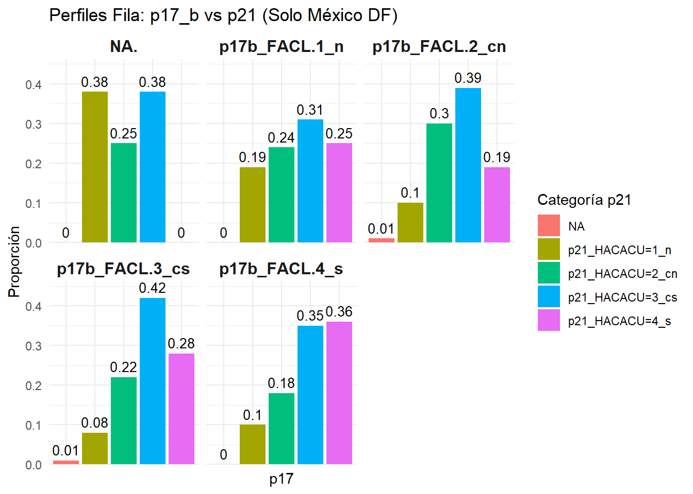
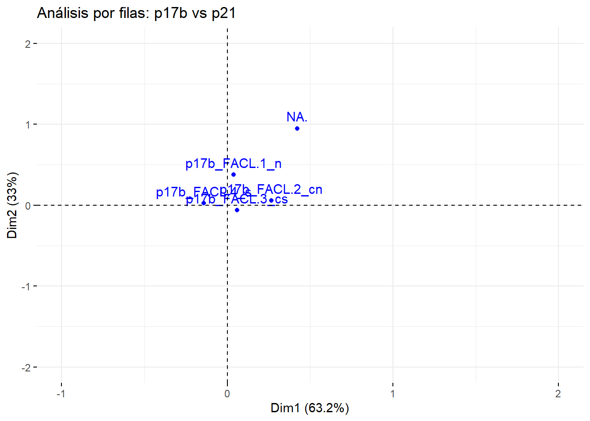
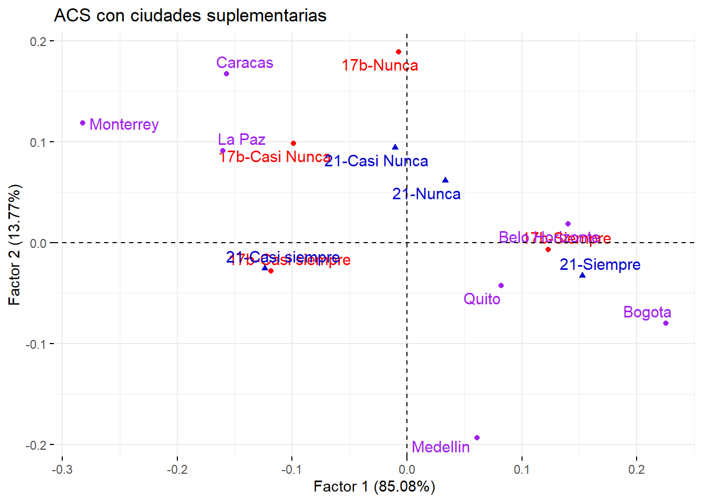
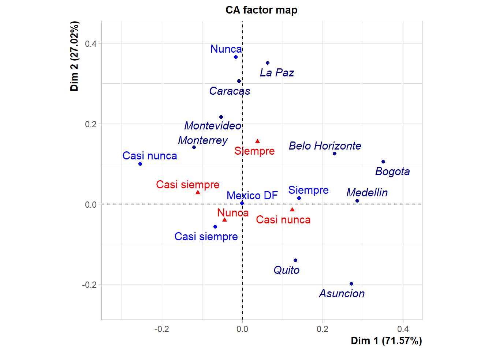
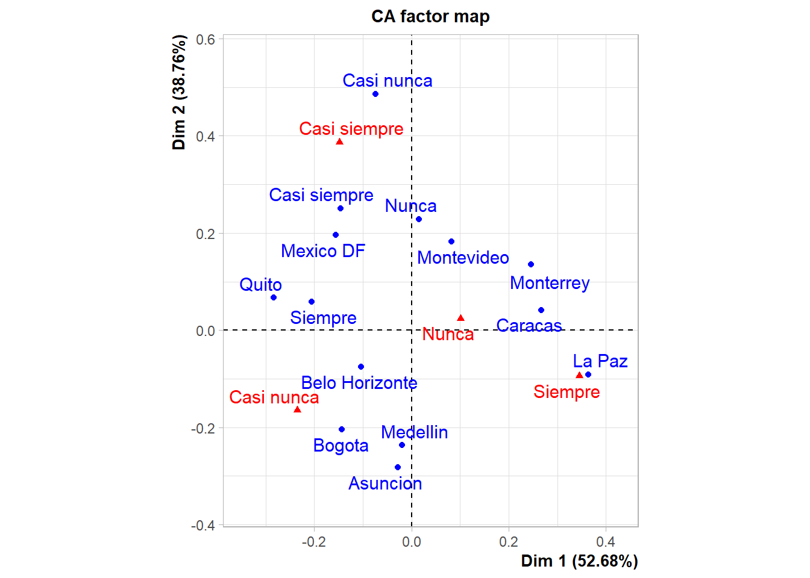
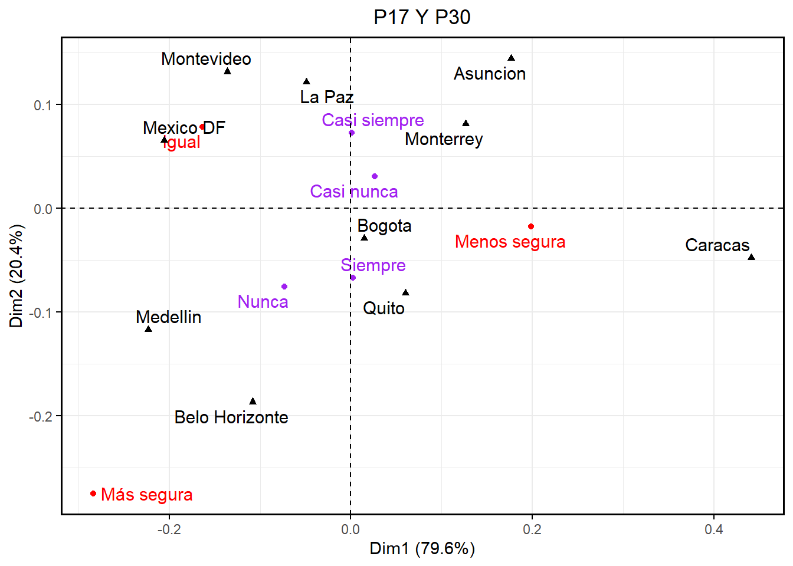

library(readxl)
library(dplyr)
library(gmodels)
library(tidyr)
library(ggplot2)
library(knitr)
library(kableExtra)
library(FactoMineR)
library(FactoMineR)
library(factoextra)
library(gridExtra)Taller Cuatro
Análisis de correspondencias simples (ACS)
Punto 1 y 3
Con la metodología del ejemplo 1.8.1 hacer un ACS para la tabla de contingencias p17b×p21 con las preguntas“p17 b”(en las filas) sobre la facilidad para cumplir la ley y la preferencia por hacer acuerdos p21. Identificar patrones o tendencias si los hay y comentar los resultados.
df <- read.csv2("C:/Users/fabia/OneDrive - Universidad Nacional de Colombia/UNAL/Descriptiva multivariada/Talleres/Recopilación/Bases de datos/ECC_completa_19426.csv", comment.char="#")
df_mexico <- df %>% filter(ciudad2 == "Mexico DF")
tabla_mexico <- table(df_mexico$p17_b, df_mexico$p21, useNA = "ifany")
tabla_con_totales <- addmargins(tabla_mexico)
print(tabla_con_totales)
p21_HACACU=1_n p21_HACACU=2_cn p21_HACACU=3_cs p21_HACACU=4_s
p17b_FACL=1_n 13 16 21 17
p17b_FACL=2_cn 25 73 96 47
p17b_FACL=3_cs 89 261 494 324
p17b_FACL=4_s 100 182 356 361
<NA> 3 2 3 0
Sum 230 534 970 749
<NA> Sum
p17b_FACL=1_n 0 67
p17b_FACL=2_cn 3 244
p17b_FACL=3_cs 9 1177
p17b_FACL=4_s 5 1004
<NA> 0 8
Sum 17 2500#Tabla de perfiles fila
perfilesF <- as.data.frame.matrix(tabla_mexico)
perf_fil <- cbind(perfilesF, TotFil = rowSums(tabla_mexico))
perfilas <- round(perf_fil / perf_fil$TotFil, 2)
#print(perfilas)
# Para Markdown
kable(perfilas, format = "markdown", caption =
"Tabla de Perfiles Fila: p17_b vs p21") %>%
kable_styling(full_width = FALSE, position = "center")| p21_HACACU=1_n | p21_HACACU=2_cn | p21_HACACU=3_cs | p21_HACACU=4_s | NA | TotFil | |
|---|---|---|---|---|---|---|
| p17b_FACL.1_n | 0.19 | 0.24 | 0.31 | 0.25 | 0.00 | 1 |
| p17b_FACL.2_cn | 0.10 | 0.30 | 0.39 | 0.19 | 0.01 | 1 |
| p17b_FACL.3_cs | 0.08 | 0.22 | 0.42 | 0.28 | 0.01 | 1 |
| p17b_FACL.4_s | 0.10 | 0.18 | 0.35 | 0.36 | 0.00 | 1 |
| NA. | 0.38 | 0.25 | 0.38 | 0.00 | 0.00 | 1 |
#Gráfico
perfilas_long <- perfilas %>%
select(-TotFil) %>%
mutate(p17_b = rownames(perfilas)) %>%
pivot_longer(-p17_b, names_to = "p17", values_to = "Proporcion")
ggplot(perfilas_long, aes(x=p17, y = Proporcion, fill = p17)) +
geom_bar(stat = "identity") +
geom_text(aes(label = round(Proporcion, 2)),
vjust = -0.5, size = 3.5) +
facet_wrap(~p17_b, scales = "free_x") +
theme_minimal() +
labs(title = "Perfiles Fila: p17_b vs p21 (Solo México DF)",
y = "Proporción",
fill = "Categoría p21") +
theme(axis.text.x = element_blank(),
axis.ticks.x = element_blank(),
strip.text = element_text(size = 12, face = "bold"),
legend.position = "right") +
scale_y_continuous(expand = expansion(mult = c(0, 0.1))) 
#Tabla de perfiles COLUMNA
perfilesC <- as.data.frame.matrix(tabla_mexico)
TotCol <- colSums(perfilesC)
perf_col <- rbind(perfilesC, TotCol)
perfilas_col <- round(sweep(perfilesC, 2, TotCol, FUN = "/"), 2)
perfilas_col <- rbind(perfilas_col, TotCol = rep(1, length(TotCol))) # Totales deben ser 1
print(perfilas_col) p21_HACACU=1_n p21_HACACU=2_cn p21_HACACU=3_cs p21_HACACU=4_s
p17b_FACL.1_n 0.06 0.03 0.02 0.02
p17b_FACL.2_cn 0.11 0.14 0.10 0.06
p17b_FACL.3_cs 0.39 0.49 0.51 0.43
p17b_FACL.4_s 0.43 0.34 0.37 0.48
NA. 0.01 0.00 0.00 0.00
TotCol 1.00 1.00 1.00 1.00
NA
p17b_FACL.1_n 0.00
p17b_FACL.2_cn 0.18
p17b_FACL.3_cs 0.53
p17b_FACL.4_s 0.29
NA. 0.00
TotCol 1.00#GRÁFICO
perfilas_col_long <- perfilas_col %>%
mutate(p21 = rownames(perfilas_col)) %>%
pivot_longer(-p21, names_to = "p17_b", values_to = "Proporcion")
ggplot(perfilas_col_long, aes(x = p21, y = Proporcion, fill = p21)) +
geom_bar(stat = "identity", color = "black", show.legend = TRUE) +
geom_text(aes(label = round(Proporcion, 2)), vjust = -0.5, size = 3.5) + # Agrega etiquetas
facet_wrap(~p17_b) +
scale_fill_manual(values = c("#1b9e77", "#d95f02", "#7570b3", "#e7298a", "#66a61e", "#e6ab02")) + # Ahora hay 6 colores
theme_minimal() +
labs(title = "Perfiles Columna: p21 vs p17_b",
x = "p17_b", # Cambia la etiqueta del eje X
y = "Proporción") +
theme(axis.text.x = element_blank(),
axis.ticks.x = element_blank(),
legend.position = "bottom")
preg17x21<-CA(as.data.frame.matrix(tabla_mexico), graph = F)# Obtener coordenadas, contribuciones y cosenos cuadrados de las filas
cor3R <- round(preg17x21$row$coord[,1:2], 2)
orden_correcto <- c("p17b_FACL=1_n", "p17b_FACL=2_cn", "p17b_FACL=3_cs", "p17b_FACL=4_s", "NA")
con3R <- round(preg17x21$row$contrib[,1:2], 2)
colnames(con3R) <- c("Cont_Factor1", "Cont_Factor2")
rownames(con3R) <- NULL
cos3R <- round(preg17x21$row$cos2[,1:2], 2)
colnames(cos3R) <- c("Cos2_Factor1", "Cos2_Factor2")
rownames(cos3R) <- NULL
# Imprimir en formato tabla en la consola
print(cbind(cor3R, con3R, cos3R)) Dim 1 Dim 2 Cont_Factor1 Cont_Factor2 Cos2_Factor1 Cos2_Factor2
p17b_FACL.1_n 0.04 0.38 0.24 41.84 0.01 0.98
p17b_FACL.2_cn 0.27 0.06 39.78 3.74 0.90 0.04
p17b_FACL.3_cs 0.06 -0.06 10.05 19.73 0.47 0.48
p17b_FACL.4_s -0.14 0.03 46.65 2.83 0.96 0.03
NA. 0.42 0.95 3.28 31.86 0.15 0.76# Graficar los perfiles fila
plotfil <- fviz_ca_row(preg17x21, title = "Análisis por filas: p17b vs p21")
coord_df <- as.data.frame(preg17x21$row$coord)
coord_df$labels <- rownames(preg17x21$row$coord)
colnames(coord_df) <- make.names(colnames(coord_df))# Reemplazar valores NA con la media de la dimensión respectiva
coord_df$Dim.1[is.na(coord_df$Dim.1)] <- mean(coord_df$Dim.1, na.rm = TRUE)
coord_df$Dim.2[is.na(coord_df$Dim.2)] <- mean(coord_df$Dim.2, na.rm = TRUE)# Definir el orden correcto de los puntos (incluyendo NA)
# Definir el orden correcto, incluyendo "NA" como categoría válida
orden_correcto <- c("p17b_FACL=1_n", "p17b_FACL=2_cn", "p17b_FACL=3_cs", "p17b_FACL=4_s", "NA")
# Filtrar y ordenar los puntos en la secuencia deseada
puntos_a_unir <- coord_df[coord_df$labels %in% orden_correcto, ]
# Asegurar que los puntos están en el orden correcto
puntos_a_unir <- puntos_a_unir[match(orden_correcto, puntos_a_unir$labels), ]# Graficar con la línea roja punteada
plotfil + geom_path(data = puntos_a_unir, aes(x = Dim.1, y = Dim.2),
color = "red", linetype = "dashed", size = 1)Warning: Using `size` aesthetic for lines was deprecated in ggplot2 3.4.0.
ℹ Please use `linewidth` instead.Warning: Removed 5 rows containing missing values or values outside the scale range
(`geom_path()`).
# Obtener coordenadas, contribuciones y cosenos cuadrados de las COLUMNAS
cor_col <- round(preg17x21$col$coord[, 1:2], 2)
con_col <- round(preg17x21$col$contrib[, 1:2], 2)
cos_col <- round(preg17x21$col$cos2[, 1:2], 2)
colnames(cor_col) <- c("Coord_Factor1", "Coord_Factor2")
colnames(con_col) <- c("Contr_Factor1", "Contr_Factor2")
colnames(cos_col) <- c("Cos2_Factor1", "Cos2_Factor2")
tabla_col <- cbind(cor_col, con_col, cos_col)
print(tabla_col) Coord_Factor1 Coord_Factor2 Contr_Factor1 Contr_Factor2
p21_HACACU=1_n -0.01 0.29 0.07 83.02
p21_HACACU=2_cn 0.16 0.01 29.81 0.49
p21_HACACU=3_cs 0.06 -0.05 7.01 12.82
p21_HACACU=4_s -0.19 -0.02 59.94 1.85
<NA> 0.28 -0.16 3.17 1.82
Cos2_Factor1 Cos2_Factor2
p21_HACACU=1_n 0.00 0.99
p21_HACACU=2_cn 0.93 0.01
p21_HACACU=3_cs 0.44 0.42
p21_HACACU=4_s 0.98 0.02
<NA> 0.62 0.19filas_validas <- !is.na(rownames(preg17x21$col$coord)) & rownames(preg17x21$col$coord) != "SinNombre"
# Aplicar el filtro SOLO si las dimensiones coinciden
if (length(filas_validas) > 0 && nrow(preg17x21$col$coord) == nrow(preg17x21$col$contrib) &&
nrow(preg17x21$col$coord) == nrow(preg17x21$col$cos2)) {
preg17x21$col$coord <- preg17x21$col$coord[filas_validas, , drop = FALSE]
preg17x21$col$contrib <- preg17x21$col$contrib[filas_validas, , drop = FALSE]
preg17x21$col$cos2 <- preg17x21$col$cos2[filas_validas, , drop = FALSE]
}# Volver a generar la gráfica asegurando que el objeto se crea correctamente
plotcol <- fviz_ca_col(preg17x21, title = "Análisis por columnas: p17b vs p21", label = "none")# Extraer coordenadas de los puntos de las columnas
coord_col_df <- as.data.frame(preg17x21$col$coord)
coord_col_df$labels <- rownames(preg17x21$col$coord)
# Renombrar columnas para evitar problemas con espacios
colnames(coord_col_df) <- make.names(colnames(coord_col_df))
# Filtrar para eliminar filas con NA en las coordenadas o en los nombres
coord_col_df <- coord_col_df[complete.cases(coord_col_df[, c("Dim.1", "Dim.2")]), ]
coord_col_df <- coord_col_df[!coord_col_df$labels %in% c("NA", "N.A"), ]
# Definir el orden correcto de los puntos
orden_correcto_col <- c("p21_HACACU=1_n", "p21_HACACU=2_cn", "p21_HACACU=3_cs", "p21_HACACU=4_s")
# Filtrar y ordenar los puntos en la secuencia deseada
puntos_col_unir <- coord_col_df[coord_col_df$labels %in% orden_correcto_col, ]
puntos_col_unir <- puntos_col_unir[match(orden_correcto_col, puntos_col_unir$labels), ]# Graficar con nombres en azul y línea punteada roja
plotcol +
geom_text(data = coord_col_df, aes(x = Dim.1, y = Dim.2, label = labels),
color = "blue", vjust = -0.5, size = 3) + # Nombres en azul sin sobreposición
geom_path(data = puntos_col_unir, aes(x = Dim.1, y = Dim.2),
color = "red", linetype = "dashed", size = 1) + # Línea roja punteada
coord_cartesian(xlim = range(coord_col_df$Dim.1, na.rm = TRUE),
ylim = range(coord_col_df$Dim.2, na.rm = TRUE))#Relaciones entre filas y columnas
# Cargar librerías necesarias
require(factoextra)
# Generar biplot de correspondencias entre las modalidades de ambas preguntas
biplot <- fviz_ca_biplot(
preg17x21, # Reemplaza con el objeto correcto de tu análisis
title = "Relaciones simultáneas entre las modalidades de p17b y p21",
label = "all", # Etiquetas para filas y columnas
col.row = "blue", # Filas en azul
col.col = "red", # Columnas en rojo
repel = TRUE # Evita superposición de etiquetas
)# Ajustar límites del eje X si es necesario
xlim_values <- c(-1.2, 0.8)
# Agregar límites y mostrar el gráfico
biplot + coord_cartesian(xlim = xlim_values)Punto 2
Construir la tabla de contingencias p17_b×ciudad excluyendo la ciudad que le correspondió al grupo y las ciudades de Asunción y Montevideo. Yuxtaponerla a la tabla p17_b × p21 del ejercicio 1 y utilizarla como variable suplementaria para averiguar si se puede identificar algún patrón o tendencia en la facilidad para cumplir la ley en las ciudades suplementarias con respecto a las tendencias de la ciudad que le correspondió al grupo.
library(readxl)
library(FactoMineR)
library(kableExtra)
library(sqldf)
library(ggplot2)
library(factoextra)
Encuestas <- read.csv2("C:/Users/fabia/OneDrive - Universidad Nacional de Colombia/UNAL/Descriptiva multivariada/Talleres/Recopilación/Bases de datos/ECC_completa_19426.csv", comment.char="#")
Encuestas <- as.data.frame(Encuestas)
Encuestas <- sqldf("select ciudad2, p17_b, p21
from Encuestas
where ciudad2 in ('Quito', 'Belo Horizonte', 'Caracas', 'La Paz', 'Bogota', 'Medellin', 'Monterrey')")
TablaPreguntas <- table(Encuestas$p17_b, Encuestas$p21)
TablaCiudades <- table(Encuestas$ciudad2, Encuestas$p21)
TablaContingencia <- rbind(TablaPreguntas, TablaCiudades)
rownames(TablaContingencia) <- c("17b-Nunca", "17b-Casi Nunca", "17b-Casi siempre", "17b-Siempre", "Belo Horizonte", "Bogota", "Caracas", "La Paz", "Medellin", "Monterrey", "Quito")
colnames(TablaContingencia) <- c("21-Nunca", "21-Casi Nunca", "21-Casi siempre", "21-Siempre")
TablaContingencia 21-Nunca 21-Casi Nunca 21-Casi siempre 21-Siempre
17b-Nunca 74 67 149 107
17b-Casi Nunca 265 181 610 343
17b-Casi siempre 910 651 2838 1603
17b-Siempre 1169 759 2507 2483
Belo Horizonte 202 188 481 507
Bogota 502 344 1141 1431
Caracas 465 274 937 424
La Paz 519 161 957 421
Medellin 311 128 956 820
Monterrey 363 300 1067 355
Quito 87 287 618 602Tabla de varianza y valores propios
ACSCiudades <- CA(TablaContingencia, graph = F, row.sup = c(5:11))
kable(round(ACSCiudades$eig,4), format = "html", booktabs = T, align = 'c')%>%
kable_styling(latex_options = c("striped", "scale_down", "hold_position")) | eigenvalue | percentage of variance | cumulative percentage of variance | |
|---|---|---|---|
| dim 1 | 0.0137 | 85.0763 | 85.0763 |
| dim 2 | 0.0022 | 13.7721 | 98.8484 |
| dim 3 | 0.0002 | 1.1516 | 100.0000 |
Tabla de coordenadas de las filas
kable(round(ACSCiudades$row$coord,4), format = "html", booktabs = T, align = 'c',
col.names = c("Factor 1", "Factor 2", "Factor 3")) %>%
kable_styling(latex_options = c("striped", "scale_down", "hold_position")) | Factor 1 | Factor 2 | Factor 3 | |
|---|---|---|---|
| 17b-Nunca | -0.0074 | 0.1891 | 0.0610 |
| 17b-Casi Nunca | -0.0989 | 0.0985 | -0.0288 |
| 17b-Casi siempre | -0.1182 | -0.0279 | 0.0040 |
| 17b-Siempre | 0.1230 | -0.0066 | -0.0011 |
Tabla de cosenos de las filas
kable(round(ACSCiudades$row$cos2,4), format = "html", booktabs = T, align = 'c',
col.names = c("Factor 1", "Factor 2", "Factor 3")) %>%
kable_styling(latex_options = c("striped", "scale_down", "hold_position")) | Factor 1 | Factor 2 | Factor 3 | |
|---|---|---|---|
| 17b-Nunca | 0.0014 | 0.9046 | 0.0940 |
| 17b-Casi Nunca | 0.4818 | 0.4775 | 0.0407 |
| 17b-Casi siempre | 0.9463 | 0.0527 | 0.0011 |
| 17b-Siempre | 0.9971 | 0.0029 | 0.0001 |
Tabla de contribuciones de las filas
kable(round(ACSCiudades$row$contrib,4), format = "html", booktabs = T, align = 'c',
col.names = c("Factor 1", "Factor 2", "Factor 3")) %>%
kable_styling(latex_options = c("striped", "scale_down", "hold_position"))| Factor 1 | Factor 2 | Factor 3 | |
|---|---|---|---|
| 17b-Nunca | 0.0107 | 43.3775 | 53.9140 |
| 17b-Casi Nunca | 6.7717 | 41.4523 | 42.2693 |
| 17b-Casi siempre | 41.4720 | 14.2558 | 3.4866 |
| 17b-Siempre | 51.7456 | 0.9143 | 0.3301 |
Tabla de coordenadas de las columnas
kable(round(ACSCiudades$col$coord,4), format = "html", booktabs = T, align = 'c',
col.names = c("Factor 1", "Factor 2", "Factor 3")) %>%
kable_styling(latex_options = c("striped", "scale_down", "hold_position")) | Factor 1 | Factor 2 | Factor 3 | |
|---|---|---|---|
| 21-Nunca | 0.0333 | 0.0616 | -0.0248 |
| 21-Casi Nunca | -0.0103 | 0.0940 | 0.0269 |
| 21-Casi siempre | -0.1238 | -0.0256 | -0.0001 |
| 21-Siempre | 0.1526 | -0.0328 | 0.0035 |
Tabla de cosenos de las columnas
kable(round(ACSCiudades$col$cos2,4), format = "html", booktabs = T, align = 'c',
col.names = c("Factor 1", "Factor 2", "Factor 3")) %>%
kable_styling(latex_options = c("striped", "scale_down", "hold_position")) | Factor 1 | Factor 2 | Factor 3 | |
|---|---|---|---|
| 21-Nunca | 0.2008 | 0.6882 | 0.1110 |
| 21-Casi Nunca | 0.0110 | 0.9141 | 0.0748 |
| 21-Casi siempre | 0.9590 | 0.0410 | 0.0000 |
| 21-Siempre | 0.9554 | 0.0441 | 0.0005 |
Tabla de contribuciones de las columnas
kable(round(ACSCiudades$col$contrib,4), format = "html", booktabs = T, align = 'c',
col.names = c("Factor 1", "Factor 2", "Factor 3")) %>%
kable_styling(latex_options = c("striped", "scale_down", "hold_position")) | Factor 1 | Factor 2 | Factor 3 | |
|---|---|---|---|
| 21-Nunca | 1.3264 | 28.0832 | 54.1593 |
| 21-Casi Nunca | 0.0876 | 44.7949 | 43.8508 |
| 21-Casi siempre | 46.2969 | 12.2232 | 0.0012 |
| 21-Siempre | 52.2891 | 14.8986 | 1.9887 |
Gráfico
fviz_ca_biplot(ACSCiudades,
col.row = "red",
col.col = "blue3",
col.row.sup = "purple",
title = "ACS con ciudades suplementarias",
xlab = "Factor 1 (85.08%)",
ylab = "Factor 2 (13.77%)",
repel = TRUE)
Punto 4
Seleccionar el subconjunto de datos
ECC_completa_19426<-read.csv2("C:/Users/fabia/OneDrive - Universidad Nacional de Colombia/UNAL/Descriptiva multivariada/Talleres/Recopilación/Bases de datos/ECC_completa_19426.csv", comment.char="#")
Mexico <- ECC_completa_19426[1:2500,]
p17xp21 <- table(Mexico$p17_b, Mexico$p21)
preg17x21 <-CA(as.data.frame.matrix(p17xp21), graph = F)Crear la tabla de contingencia
Ciudades <- table(ECC_completa_19426$ciudad2, ECC_completa_19426$p21)
Ciudadespreguntas <- rbind(p17xp21, Ciudades)
colnames(Ciudadespreguntas) <- c("Siempre", "Casi siempre", "Nunca", "Casi nunca")
rownames(Ciudadespreguntas)[1:4] <- c("Nunca", "Casi nunca", "Casi siempre", "Siempre")kable(Ciudadespreguntas, format = "markdown", booktabs = TRUE,
caption = "Preguntas activas con ciudades como variable suplementaria",
label = "prSuplementaria") %>%
kable_styling(latex_options = c("striped", "scale_down", "hold_position"))| Siempre | Casi siempre | Nunca | Casi nunca | |
|---|---|---|---|---|
| Nunca | 13 | 16 | 21 | 17 |
| Casi nunca | 25 | 73 | 96 | 47 |
| Casi siempre | 89 | 261 | 494 | 324 |
| Siempre | 100 | 182 | 356 | 361 |
| Asuncion | 55 | 12 | 299 | 215 |
| Belo Horizonte | 202 | 188 | 481 | 507 |
| Bogota | 502 | 344 | 1141 | 1431 |
| Caracas | 465 | 274 | 937 | 424 |
| La Paz | 519 | 161 | 957 | 421 |
| Medellin | 311 | 128 | 956 | 820 |
| Mexico DF | 230 | 534 | 970 | 749 |
| Monterrey | 363 | 300 | 1067 | 355 |
| Montevideo | 216 | 248 | 516 | 290 |
| Quito | 87 | 287 | 618 | 602 |
Como podemos evidenciar La Paz y Bogotá siempre hacen acuerdos, luego tenemos a Mexico DF y Bogota que casi siempre hacen acuerdos, seguimos con Bogotá y Monterrey que nunca hacen acuerdos por último, Bogotá y Medellin que casi nunca hacen acuerdos.
CiudadesIlustrativas = CA(Ciudadespreguntas, row.sup = c(5:10,12:14))
summary(CiudadesIlustrativas)
Call:
CA(X = Ciudadespreguntas, row.sup = c(5:10, 12:14))
The chi square of independence between the two variables is equal to 56.86353 (p-value = 8.365455e-08 ).
Eigenvalues
Dim.1 Dim.2 Dim.3
Variance 0.008 0.003 0.000
% of var. 71.571 27.020 1.409
Cumulative % of var. 71.571 98.591 100.000
Rows
Iner*1000 Dim.1 ctr cos2 Dim.2 ctr cos2
Nunca | 1.868 | -0.016 0.042 0.002 | 0.365 58.217 0.966 |
Casi nunca | 3.670 | -0.254 38.073 0.851 | 0.100 15.633 0.132 |
Casi siempre | 1.836 | -0.067 12.745 0.570 | -0.057 24.746 0.418 |
Siempre | 4.094 | 0.141 49.138 0.985 | 0.015 1.370 0.010 |
Mexico DF | 0.002 | -0.001 0.002 0.095 | 0.001 0.034 0.689 |
Dim.3 ctr cos2
Nunca 0.067 37.292 0.032 |
Casi nunca -0.035 37.591 0.017 |
Casi siempre 0.010 13.912 0.012 |
Siempre -0.009 11.000 0.004 |
Mexico DF 0.001 0.205 0.217 |
Columns
Iner*1000 Dim.1 ctr cos2 Dim.2 ctr cos2
Siempre | 2.382 | 0.037 1.570 0.054 | 0.155 71.806 0.934 |
Casi siempre | 2.870 | -0.111 32.115 0.918 | 0.028 5.419 0.059 |
Nunca | 1.449 | -0.044 9.278 0.526 | -0.040 20.561 0.440 |
Casi nunca | 4.767 | 0.124 57.037 0.982 | -0.015 2.214 0.014 |
Dim.3 ctr cos2
Siempre 0.017 17.407 0.012 |
Casi siempre -0.018 40.965 0.023 |
Nunca 0.011 31.092 0.035 |
Casi nunca -0.008 10.536 0.004 |
Supplementary rows
Dim.1 cos2 Dim.2 cos2 Dim.3 cos2
Asuncion | 0.271 0.320 | -0.199 0.172 | 0.342 0.508 |
Belo Horizonte | 0.229 0.660 | 0.125 0.196 | 0.107 0.145 |
Bogota | 0.350 0.837 | 0.105 0.075 | 0.113 0.088 |
Caracas | -0.008 0.000 | 0.305 0.364 | 0.403 0.635 |
La Paz | 0.063 0.010 | 0.350 0.299 | 0.533 0.691 |
Medellin | 0.286 0.510 | 0.008 0.000 | 0.280 0.489 |
Monterrey | -0.119 0.075 | 0.141 0.104 | 0.397 0.822 |
Montevideo | -0.053 0.032 | 0.216 0.542 | 0.192 0.426 |
Quito | 0.132 0.439 | -0.141 0.496 | -0.051 0.064 |Vemos como proyectamos las ciudades sobre los factores producidos por la tabla de contingencia de las preguntas actuar conforme a la ley y hacer acuerdos o tratos entre sí, donde tenemos a la ciudad de Mexico DF como la ciudad activa y las demás suplementarias, obsevemos como se repite el “Nunca” y el “Casi siempre” para hacer acuerdos o tratos entre sí, como los que se encuentran más cerca del centro, por otro lado, tenemos el “Casi siempre” y el “Siempre” para actuar conforme a la ley más cerca del centro.
La varianza en las dos primeras dimensiones avarcan aproximadamente el 98 porciento, por lo tanto por eso tomamos los dos primeros factores, en las filas (Actuar conforme a la ley) vemos como en el primer factor Casi nunca y Siempre son los valores más altos tanto en coordenadas, contribución y en los cosenos cuadrados.En el segundo factor nunca y casi nunca son los más “altos” en coordenadas, también nunca y casi siempre de contribuciones, por último, Nunca y Mexico DF en cosenos cuadrados.
Por otro lado, vemos con las columna (Hacer acuerdos o tratos entre sí) en el primer factor como Casi nunca y Casi siempre son los más “altos” en coordinadas, contribuciones y cosenos cuadrados.En el segundo factor Siempre y Nunca que también son las mejores en coordinadas, contribuciones y cosenos cuadrados.
Por último, veamos que las variables suplementarias de ciudades no tienen varizanza por ser suplementarias y no aportan, en el primer componente vemos a Bogotá y Medellin como los más altos y Caracas como el más bajo en coordenadas, mientras Bogotá y Belo Horizonte como más altos y Caracas nuevamente en cosenos cuadrados.En el segundo componente tenemos La Paz y Caracas como los más altos y Medellin como el más bajo en coordenadas, mientras Montevideo y Quito como más altos y Medellin nuevamente en cosenos cuadrados.
CiudadesIlustrativasa <- CA(as.data.frame.matrix(Ciudadespreguntas))
Punto 5
library(sqldf)
Encuestas <- read.csv2("C:/Users/fabia/OneDrive - Universidad Nacional de Colombia/UNAL/Descriptiva multivariada/Talleres/Recopilación/Bases de datos/ECC_completa_19426.csv", comment.char="#")
Encuestas <- as.data.frame(Encuestas)
Encuestas <- sqldf("select p30, ciudad2
from Encuestas")TablaContingencia <- table(Encuestas$p30, Encuestas$ciudad2)
TablaContingencia
Asuncion Belo Horizonte Bogota Caracas La Paz Medellin
p30_AP=1_menosseg 323 603 1665 1457 926 841
p30_AP=2_igual 240 547 1398 524 1008 1031
p30_AP=3_masseg 18 209 329 93 139 334
Mexico DF Monterrey Montevideo Quito
p30_AP=1_menosseg 929 1124 514 818
p30_AP=2_igual 1299 858 664 597
p30_AP=3_masseg 254 113 97 165rownames(TablaContingencia) <- c("Menos segura", "Igual", "Más segura")ACS <- CA(TablaContingencia, graph = F)p <- fviz_ca_biplot(ACS,
col.row = "red",
col.col = "blue3",
repel = TRUE,
title = "Seguridad Ciudadana: Perspectivas en diferentes ciudades")
p + theme(
plot.title = element_text(hjust = 0.5),
panel.border = element_rect(color = "black", fill = NA, size = 1)
)Warning: The `size` argument of `element_rect()` is deprecated as of ggplot2 3.4.0.
ℹ Please use the `linewidth` argument instead.Los habitantes de ciudades como Bogotá, Quito, Monterrey, Asunción y Caracas han reportado un aumento en la percepción de inseguridad, situando a estas ciudades en la categoría de “Menos seguras”. Por otro lado, en ciudades como Medellín y Bello Horizonte, la percepción predominante es que la seguridad ha mejorado, clasificándolas como “Más seguras”. Finalmente, en ciudades como Ciudad de México, Montevideo y La Paz, la percepción de seguridad se mantiene estable, indicando que, para sus habitantes, la situación “sigue igual”.
Punto 6
Encuestas <- read.csv2("C:/Users/fabia/OneDrive - Universidad Nacional de Colombia/UNAL/Descriptiva multivariada/Talleres/Recopilación/Bases de datos/ECC_completa_19426.csv", comment.char="#")
Encuestas <- as.data.frame(Encuestas)
Encuestas <- sqldf("select p30, ciudad2
from Encuestas")TablaContingencia <- table(Encuestas$p30, Encuestas$ciudad2)
TablaContingencia
Asuncion Belo Horizonte Bogota Caracas La Paz Medellin
p30_AP=1_menosseg 323 603 1665 1457 926 841
p30_AP=2_igual 240 547 1398 524 1008 1031
p30_AP=3_masseg 18 209 329 93 139 334
Mexico DF Monterrey Montevideo Quito
p30_AP=1_menosseg 929 1124 514 818
p30_AP=2_igual 1299 858 664 597
p30_AP=3_masseg 254 113 97 165rownames(TablaContingencia) <- c("Menos segura", "Igual", "Más segura")Encuestas <- read.csv2("C:/Users/fabia/OneDrive - Universidad Nacional de Colombia/UNAL/Descriptiva multivariada/Talleres/Recopilación/Bases de datos/ECC_completa_19426.csv", comment.char="#")
Encuestas <- as.data.frame(Encuestas)
Encuestas <- sqldf("select p17_b, ciudad2
from Encuestas")TablaP17 <- table(Encuestas$p17_b, Encuestas$ciudad2)
TablaP17
Asuncion Belo Horizonte Bogota Caracas La Paz Medellin
p17b_FACL=1_n 3 23 97 49 77 73
p17b_FACL=2_cn 66 67 222 213 321 230
p17b_FACL=3_cs 334 510 935 775 896 989
p17b_FACL=4_s 179 779 2157 1032 754 922
Mexico DF Monterrey Montevideo Quito
p17b_FACL=1_n 67 35 8 45
p17b_FACL=2_cn 244 131 45 243
p17b_FACL=3_cs 1177 1275 408 731
p17b_FACL=4_s 1004 757 814 574rownames(TablaP17) <- c("Nunca", "Casi nunca", "Casi siempre", "Siempre")TablaContingenciaPreguntasCiudades <- rbind(TablaContingencia, TablaP17)
TablaContingenciaPreguntasCiudades Asuncion Belo Horizonte Bogota Caracas La Paz Medellin Mexico DF
Menos segura 323 603 1665 1457 926 841 929
Igual 240 547 1398 524 1008 1031 1299
Más segura 18 209 329 93 139 334 254
Nunca 3 23 97 49 77 73 67
Casi nunca 66 67 222 213 321 230 244
Casi siempre 334 510 935 775 896 989 1177
Siempre 179 779 2157 1032 754 922 1004
Monterrey Montevideo Quito
Menos segura 1124 514 818
Igual 858 664 597
Más segura 113 97 165
Nunca 35 8 45
Casi nunca 131 45 243
Casi siempre 1275 408 731
Siempre 757 814 574ACSp30p17 <- CA(TablaContingenciaPreguntasCiudades, graph = F, row.sup = c(4:7))p <- fviz_ca_biplot(ACSp30p17,
col.row = "red",
col.col = "black",
col.row.sup= "purple",
repel = TRUE,
title = "P17 Y P30")
p + theme(
plot.title = element_text(hjust = 0.5),
panel.border = element_rect(color = "black", fill = NA, size = 1)
)